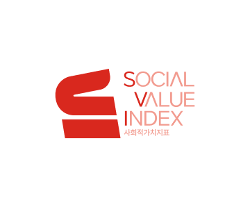

사회적가치지표(SVI)란? Social Value Index
- ‘사회적 가치’란, 경제적 회계로 측정할 수 없는 공공의 이익과 발전에 기여하는 가치를 의미하며, ‘사회적 가치 실현’은
공동체의 발전을 위한 “공익(Public interest)의 실현”을 의미 - 사회적가치지표(SVI)*는 사회적 목적을 추구하는 사회적경제기업이 조직운영을 통해 창출한 사회적 성과와 그 영향을
종합적·객관적으로 측정하는 지표
SVI 측정 사업의 목적
- 사회적가치지표(SVI)를 통해 사회적기업의 사회적 성과를 측정하여 객관적인 평가 결과 도출 및 사회적 가치 확산
- 사회적 가치 측정 결과 피드백 제공 및 우수기업 발굴·포상 등을 통한 사회적 성과 향상 지원
신청대상
- (예비)사회적기업 연 1,000개소 내외
- (예비)사회적기업이 아닌 사회적기업 성장지원센터 입주기업 중 한국사회적기업진흥원 통합센터에서 SVI 측정 필요성을 인정하는 경우, 신청 가능
측정단계
- 1 측정공고
-
2
결과안내
접수일 기준 ~ 1개월
-
3
SVI측정
접수일 기준 ~ 2개월
-
4
결과안내
접수일 기준 ~ 3개월
-
5
홍보 및 확선
측정결과 이후
시스템을 통한 SVI 측정 절차 안내
진흥원
- 1 검수 및 담당자 배정
- 2 계량지표 측정 (검토의견 및 보완요청)
- 3 비계량지표 측정 (측정검토서 확인)
- 4 측정완료
기업
- 1 SVI 측정 신청 (접수 후 신청확정서 출력)
- 2 검토의견 확인 / 측정지표 보완
- 3 인터뷰 대응
- 4 측정결과확인 및 출력 (측정점수 및 등급)
- 계량지표측정 : 서면(신청서/증빙서류) 확인 중심 측정, 필요시 유선, 온라인 화상 등으로 보완자료 요청/검토
- 비계량지표측정 : 계량지표 측정 검토서 확인 및 인터뷰를 통한 최종 측정 후 등급(탁월/우수/보통/미흡) 확정
인터뷰 방법은 유선/온라인화상/현장실사 등 확인 필요사항에 따라 변동 가능
세부절차
1
사회적가치지표(SVI) 측정 사업 공고
- (사업 홍보) 2024년도 사회적가치지표(SVI) 측정 사업 공고 및 홍보
- (교육 추진) (예비)사회적기업 등 대상 권역별 SVI 교육 추진
2
참여기업 신청 접수
-
(온라인 신청) 사회적가치지표측정센터*를 통해 신청서 접수
온라인 주소 : www.seis.or.kr/svi (사회적가치지표측정센터) 접속 및 로그인
-
(자기진단) 신청 전 계량지표 중심의 SVI 측정을 통해 모의측정 점수 사전 확인 가능
자가진단 과정에서 입력한 정보 및 증빙서류는 신청서 작성 시, 시스템에서 자동 연계
- (재측정 신청) 이전 차수 측정 결과 ‘미흡’ 등급인 기업 중 재측정을 받고자 하는 기업은 다음 접수 기간 내 재측정 신청 가능
3
사회적가치지표(SVI) 측정
-
(사전검토) 신청서·증빙서류 확인 및 검토, 필요시 문의·보완
사전검토 담당하는 용역기관에서 유선, 메일 등으로 보완자료 요청·검토
-
(측정) 지표 측정 및 인터뷰* 진행, 최종 측정점수 및 등급** 확정
인터뷰 방법은 유선, 온라인 화상, 현장실사 등 확인 필요사항에 따라 변동 가능
4개 등급: 탁월(90점 이상), 우수(75점~90점), 보통(60점~75점) 미흡(60점 미만)
4
측정 결과 안내
-
‘접수일’로부터 최대 3개월 이내 통보(예정)
증빙서류 등 추가 확인 및 인터뷰 일정에 따라 변동될 수 있음
- 결과 확정 후 통합사업관리시스템(www.seis.or.kr)에서 상시 조회 가능
- 측정 결과에 이의가 있을 시 이의신청 제도 활용
이의신청 절차
이의신청접수
개별기업 측정 결과 통보 후
이의신청 공문 접수 및 반려
부분 재측정
해당 지표에 대한
부분 재측정 실시
재측정 결과안내
개별기업 측정 결과 통보 후
이의신청 공문 접수 및 반려
5
탁월·우수기업 사업 연계 및 홍보
- (사업 연계) 다양한 공공·민간기관의 사회적기업 지원사업에 참여 자격 및 가점 기준 등으로 활용·연계
-
(홍보) ‘탁월’·‘우수’ 등급 기업 공시 및 전국 지자체·공공기관 대상 안내
진흥원 누리집(socialenterprise.or.kr) 공고 및 각종 기관 대상 공문 발송
-
‘접수일’로부터 최대 3개월 이내 통보(예정)
증빙서류 등 추가 확인 및 인터뷰 일정에 따라 변동될 수 있음
- 결과 확정 후 통합사업관리시스템(www.seis.or.kr)에서 상시 조회 가능
- 측정 결과에 이의가 있을 시 이의신청 제도 활용
공공·민간기관 대상 홍보
-
전국 지자체 및 공공기관 대상 홍보
공공기관 우선구매 및 지원사업 대상기업 선정 시 탁월·우수기업 추천
- 진흥원 공식 블로그, 매거진 등을 통한 홍보 지원
-
각종 기관에서 사회적기업 추천 요청 시 탁월·우수기업 우선 추천
(사업 홍보) 2024년도 사회적가치지표(SVI) 측정 사업 공고 및 홍보
(교육 추진) (예비)사회적기업 등 대상 권역별 SVI 교육 추진
공공·민간기관 대상 홍보
-
사회적가치지표(SVI) 측정결과 최우수 기업 대상 ‘한국사회적기업진흥원장상’ 수여
SVI 측정결과 ‘탁월’ 등급 기업 중 진흥원 ‘포상 업무처리지침’에 따라 최종 선정
- 고용노동부 사회적기업 유공 표창 선정 시 SVI ‘우수’ 등급 이상 가점 부여
기타
- 2026년부터(2025년 실적분 평가) SVI 평가에서 ‘미흡’을 받거나 평가에 미참여한 기업의 구매액은 우선구매 실적에서 미포함 예정*
-
아울러, 2025년부터(2024년 실적분 평가) ‘사회적가치지표’ 평가 결과, ‘우수’ 또는 ‘탁월’ 평가를 받은 사회적기업은 명단을 공표하여 공공기관 우선구매를 촉진할 계획
출처: 고용노동부·한국사회적기업진흥원 “사회적기업 제품 우선구매 지침” (2024.1.)